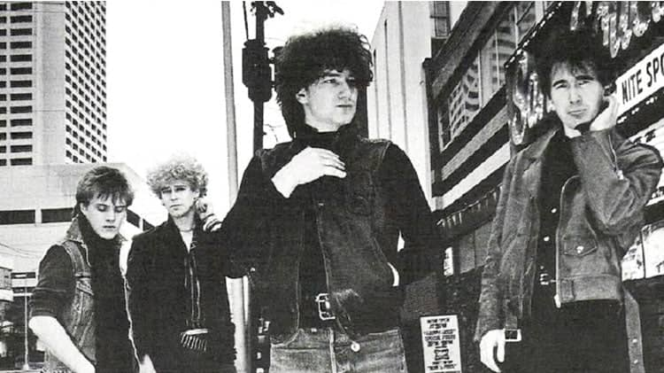

U2

It all began in 1976 when Larry Mullen pinned a 'musicians wanted' ad to the notice board at Dublin's Temple Mount School: Drummer seeks musicians to form band. 'So on Saturday 25th September 1976, ' recalls Larry. 'This odd group of people convened in my kitchen in Artane. And that's where it started.'